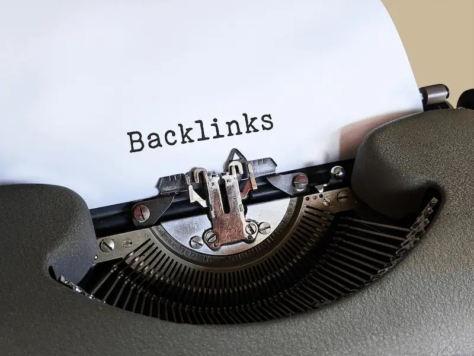

Advanced SEO Techniques
On-Page SEO Techniques
On-page SEO includes optimizing content, meta tags, headings, and images to improve your website’s search visibility directly on your pages.
Off-Page SEO Techniques
Off-page SEO focuses on actions taken outside of your website such as link building, social signals, and influencer outreach to increase authority and trust.
One Page SEO
On-page SEO helps optimize individual pages to rank higher and earn more relevant traffic.
Title Tags
Each page should have a unique and descriptive title tag with your main keywords.
Meta Descriptions
Clear meta descriptions encourage users to click through from search results.
Header Tags (H1, H2, H3)
Proper use of headers helps search engines understand page structure and content hierarchy.
URL Structure
Clean, keyword-rich URLs are better for SEO and user understanding.
Image Optimization
Use alt text and compress images to improve page load speed and SEO.
Off-Page SEO Techniques
Backlinks
Backlinks are one of the most important factors for improving website authority and search rankings. Quality backlinks from trusted sites can significantly boost SEO performance.

Guest Posting
Guest posting on reputable blogs helps you build authority, reach new audiences, and gain high-quality backlinks to your website.
Social Signals
Engagement on social media platforms can indirectly influence SEO by driving traffic and increasing brand visibility.